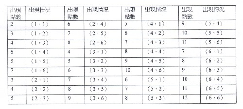

或然率與賭博 江銘輝 五夢網

圖：或然率起源於擲骰子遊戲
自然界中發生的所有現象，按發生的可能性，有三種:
一種是必然發生的現象，例如：在一標準氣壓下水在 10O0C會沸騰、黃金丟在水中會下沉，這種現象稱為必然現象，一種是根本不可能會發生的現象，例如人在一般大氣下能舉1000公斤的物體、鋼鐵在常溫下會熔化，這些現象稱為不可能發生現象。還有一種是在一定條件下可能會發生，也可能不會發生。例如，拋出一枚質量均勻的硬幣，落地後正面可能朝上也可能朝下；向標靶射擊一槍，它可能擊中標靶也可能未擊中標靶，這種現象稱為隨機現象。而或然率主要研究隨機現象中，出現的可能性。如今或然率已是研究隨機事件，數量規律的一門數學，它與實際生活有著密切的聯繫，並在自然科學、技術科學、社會科學、軍事和工、農業有著廣泛的應用。
一、或然率的起源
義大利數學家兼醫生卡丹喜歡賭博，在賭博時經常研究輸贏的方法。卡丹曾這樣說:把兩顆骰子擲出，以每個骰子出現的點數之和作為賭注，則押7最好。現在來看，這個想法很易理解，但在卡丹的時代，應該說是很傑出的思想。實際上這個思想是或然率的萌芽。
或然率起源於賭博是無庸致疑地，這有二個傳說，但無論那一種，都與巴斯卡及德．梅雷有關，此二種傳說如下：
1. 十七世紀的路易王朝時代，法國有一位貴族，名叫德．梅雷（Chevalier de Méré）。有一次他到宮廷的賭場去賭錢，賭桌上正在玩著擲骰子遊戲。他們的賭法是:兩個骰子連續投擲24次，看看究竟是至少會出現一次「雙么」呢？還是根本不會出現。德．梅雷毫不遲疑地一再押至少會出現一次的這一方。因為他想:兩顆骰子投擲一次時，出現「單么」的或然率是三十六分之一;所以兩個骰子連擲二十四次出現雙么的或然率是三十六分之二十四，就是三分之二。如果押在會出現的一方，一定是穩操勝算。
可是，長時間賭博下來，梅雷的口袋愈來愈輕，最後輸光了。想不出原因的梅雷於是寫信向數學家巴斯卡請教。
巴斯卡為了解決這個難題，又和數學家費爾馬交換意見;由於兩個人的討論研究，就這樣地建立了或然率的理論基礎。所以我們說「賭博是或然率之母」，一點也不為過。其實：
兩個骰子連擲二十四次，至少出現一次「雙么」的或然率，也就是用一來減去投擲二十四次中連一次「雙么」也不出現的或然率:
1-(1-1/36)24=0．4913
比50%少一點，難怪德．梅雷贏不了這場賭博。
2.另一種傳說如下：
1651年夏天，巴斯卡在前往浦挨托鎮的旅行途中，偶然遇到了好朋友--貴族的公子哥兒--梅雷。
梅雷經常進出於賭場，為了消磨旅途中寂寞的時間，他大談「賭博經」，並提出了一個十分有趣的「分賭注」問題，向巴斯卡求教。問題是這樣的:
有一次，梅雷和賭友賭骰子，雙方各押賭注32枚金幣。誰先擲出三次6點，就算贏了對方，可以得到全部賭注。
賭博進行一段時間後，梅雷已經擲出兩次6點，而賭友只擲出一次6點。二人因為各有要事，中斷了賭博，由於賭金分配的問題，兩人出現了分歧。
賭友說，他要是再擲出兩次6點，或者梅雷再擲出一次 6點就算贏，所以他有權分得梅雷的一半:即梅雷分64個金幣的2/3，自己分64個金幣的1/3。
梅雷則認為分配不合理，他應該分得64個金幣的3/4， 賭友只能分得64個金幣的1/4。
究竟兩個人所說的，誰對呢?
梅雷提出的「分賭注」的問題，把巴斯卡難住了。他一直想了2、3年，到了1654年他寫信給好友費馬，兩人展開了熱烈的討論，結果兩人一致認為: 梅雷的分法是對的，他應得64個金幣的3/4，賭友應得64個金幣的1/4。
荷蘭的數學家惠更斯得到此消息，也參加了他們的討論。並把討論結果寫成一本書，叫做《論賭博中的計算》(1657)，這是或然率的最早一部著作。於是一個新的數學分支--或然率登上了數學的舞臺。
台灣將來可能會允許賭場的開設，也許閣下將來也會到賭場一遊，不管閣下對賭博的態度如何，了解一些賭博與或然率的常識，應該有益的，現在我們將它介紹如下：
1.輪盤（Roulette）
圖：輪盤共有38個數字，黑、紅個18個數字，綠色有2個數字。
很多人可能從未完過輪盤，或只完過幾次，不過對輪盤大家應該耳熟能詳。我們現在討論它與數位期望值的關係。在賭博中，期望值的定義是：每次下注，可能贏得的錢。假若你用1元押輪盤上某一個號碼，獲勝機率是1比38，若贏賭場賠你35元，輸的機率是37比38，損失1元。則期望值是：
期望值=1/38(35)+37/38(-1)= -1/19
每次以一元為賭資你的期望值是－1/19元，也就是說每次損失－1/19元，當然是有利莊家。
如果你使用賭場提供的另一種賭法，即選擇賭色彩（紅色或黑色），不賭號碼。在18格紅色，18格黑色，以一元對賭，贏得一元，失亦損失一元。但你要注意有二格（0和00）是綠色。期望值是：
期望值=18/38(1)+20/38(-1)= -1/19，仍然是－1/19元。
2.撲克（Poker）

圖：傳統上將撲克俗稱為梭哈， 梭哈是英文Show Hand的音譯。Show Hand是Five Card Stud的別名。。玩家在遊戲過程中有增加注碼和退出的機會，換著簡單說，玩家要有機會能夠偷雞（Bluff），才能算是撲克。像是二十一點、百家樂、橋牌等常見的使用撲克牌的遊戲不屬於撲克。
撲克牌的玩法有好幾種，在賭場上較常看到有21點、撲克（梭哈；Show Hand），梭哈的玩法是參加遊戲者每人分5張撲克牌，然後從五張的數字及發色來決定究竟贏或輸。但在梭哈，為什麼「同花順」最大，「四大金剛」次之，「同花」比「順仔」大，「順仔」比「三條大」呢？
原來一手牌（5張撲克牌）的好或壞是基於它發生的或然率，牌愈好，發生的或然率愈低。下表是它們發生的或然率。

3. 骰子
除了上述的二顆骰子擲36次的玩法外，我們再介紹將N顆骰子擲一次同時出現相同數字的或然率，譬如將10顆骰子擲下，同時出現2的或然率？N顆骰子擲下，同時出現2的或然率等於擲骰子N次都出現2的或然率。為了證明的方便，我們採取後者。首先擲第1顆骰子，出現2的或然率是1/6。接著擲第2顆骰子，出現2的或然率也是1/6，擲第1顆及第2顆骰子同時出現2的或然率是：
=1/6 x 1/6=1/36，
連擲10次出現2的或然率是：
=1/6x1/6x1/6x1/6x1/6x1/6x1/6x1/6x1/6x1/6=（1/6）10
計算結果是1/60466176，即6千零46萬6千1百76分之一。換句話說，10秒一次擲10顆骰子，1分鐘6次，1小時擲360次，1年365天才擲15萬3千6百次，也就是說每天不吃、不喝、不睡覺，要393.6年才保證出現1次。因此，我們不要以為1顆骰子出現2並不稀奇，多擲幾次，10顆骰子要同時出現2並不困難，實際上，終其一生也很難碰到。

表：2至30個銅板同時擲出正面的或然率
4.擲銅板
傳說中，古時候有一位國王要出征，為了要鼓勵士氣，而在神明面前拋100個銅板，結果，士氣大振，所向披靡，戰果輝煌。
1個銅板出現正面的或然率是1/2，那麼100個銅板要同時出現正面的或然率是：
（1/2）100
這是小數點以下10個零的數目，面對機率這麼小的數目，即使地球上所有的人各持100個銅板，花上百年，也沒有人會擲出全部是正面的銅板。所以國王所拋的銅板，為了要鼓勵士氣，特別製成雙面都是正面的銅板。(如表2)
5.生日問題：
上面所述都是和賭博有關的或然率，現在我們介紹與日常生活有關的或然率。
當我們考上高中，歡歡喜喜入學時，發現在班上40位同學，居然有同月同日生的同學，打聽別班同學，亦有相同情況，心裏非常驚訝。其實這並沒有什麼稀奇，一般人以為生日相同的巧合機會很小。但實際上並非如此。我們來計算就可証明。一年有365天，就是有365種可能。那麼1班40人生日都不重複的或然率是：
365/365x364/365x363/365x362x365x......x325/365x326/365=0.11
也就是說，
40個人當中，生日不重複的或然率只有0.11，生日重複的達0.89（1-0.11）。
附表是一班人數20〜60人，生日相同的或然率，從附表中我們看到，一班40人生日相同的或然率是89%，50人是97%，至於60人則達到99%。這個數目另人驚訝。所以一班數十人中，如果碰上相同生日的同學，是必然的，不是巧合。
6. 兩顆骰子擲出，以每個骰子出現的點數之和作為賭注，則押7最好。
這是文章開始就提到的問題，它總共出現得的情況共有36種，如下：

表：擲二顆骰子，出現的點數和
從表中我們得到以下的事實，進一步推論，押7是最有利
的。當然賭場老闆也知道這種狀況，因此賭法也會有變化。
數字和為2，共1組。
數字和為3，共2組。
數字和為4，共3組。
數字和為5，共4組。
數字和為6，共5組。
數字和為7，共6組。
數字和為8，共5組。
數字和為9，共4組。
數字和為10，共3組。
數字和為11，共2組。
數字和為12，共1組。